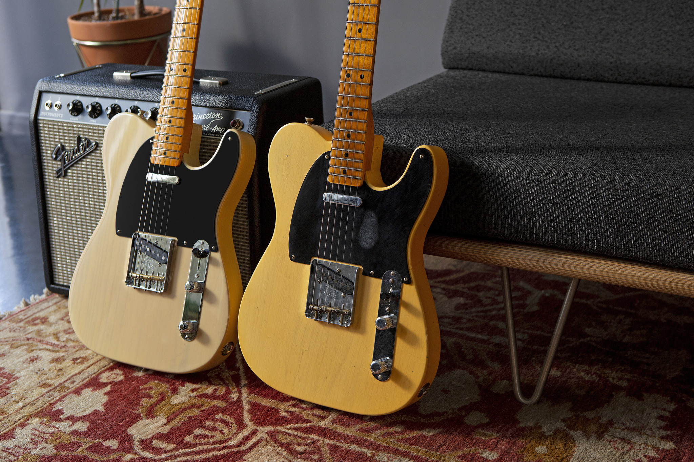

Historia
La historia de la guitarra eléctrica, ¿por qué se creó?
Hoy en día hay pocas canciones que no tengan una guitarra eléctrica entre sus instrumentos. Es un instrumento armónico y melódico de seis cuerdas que utiliza el principio de inducción electromagnética para convertir las vibraciones de las cuerdas en señales eléctricas, que terminan por convertirse en sonido. El sonido de la guitarra depende además de otros factores, como las pastillas, la escala, el puente o la cejilla. Aunque su historia es todavía más curiosa.
La guitarra eléctrica surge como una necesidad de las bandas de jazz de Estados Unidos durante la década de 1920. El poco sonido que emitían las guitarras acústicas hacía que el instrumento no tuviese ninguna relevancia, más allá del acompañamiento.
Lloyd Loar, uno de los ingenieros de guitarras Gibson, fue el primero en experimentar y probar. Lo que creó inicialmente fueron unas pastillas que se acoplaban a una guitarra normal, pero que su sonido se amplificaba por un altavoz.
La primera guitarra eléctrica de la historia
